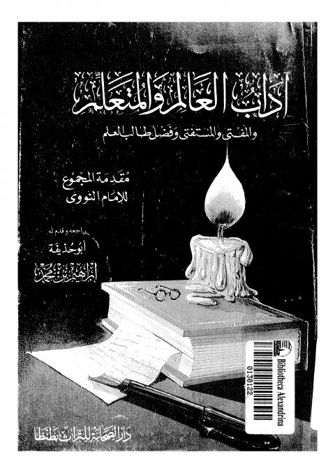

Downloads need an internet connection.
آداب العالم والمتعلم والمفتى والمستفتى وفضل طالب العلم
Authors: يحيى بن شرف النووي
Editors: أبو حذيفة إبراهيم بن محمد
Publishers: مكتبة الصحابة بطنطا
**▫️ العنوان: آداب العالم والمتعلم والمفتى والمستفتى وفضل طالب العلم** ▪️ المؤلف: #النووى ▫️ المحقق: #ابو_حذيفة_ابراهيم_بن_محمد ▪️ الناشر: #مكتبة_الصحابة ▫️ تاريخ النشر: 1408 -1987 ▪️ بلد النشر: طنطا، #مصر ▫️ الطبعة: 1 ▪️ عدد الأجزاء: 1 ▫️ الصفحات: 92 ▪️ نوع الوعاء: #كتاب ▫️ التصنيف الرئيسي: #الزهد_والرقائق ۪